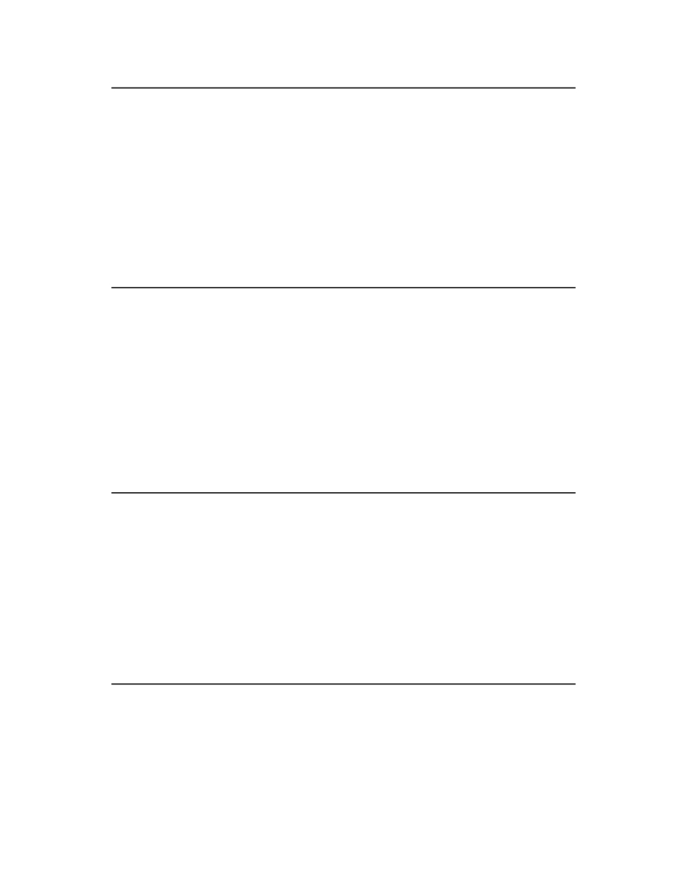

<table border="0" height="1453" width="1123">
<tr><td>
<div style="position:absolute; top:0; left:0;"></div>
<div style="position:absolute;top:74.119;left:132.145;"><nobr>
<span style="font-size:20.022;font-style:italic;">Volume II: RISC-V Privileged Architectures V20190608-Priv-MSU-Ratified</span>
</nobr></div>
<div style="position:absolute;top:153.720;left:182.201;"><nobr>
<span style="font-size:18.285;font-style:italic;">The MXR and SUM mechanisms only affect the interpretation of permissions encoded in page-</span>
</nobr></div>
<div style="position:absolute;top:175.661;left:182.201;"><nobr>
<span style="font-size:18.285;font-style:italic;">table entries. In particular, they have no impact on whether access exceptions are raised due to</span>
</nobr></div>
<div style="position:absolute;top:197.603;left:182.201;"><nobr>
<span style="font-size:18.285;font-style:italic;">PMAs or PMP.</span>
</nobr></div>
<div style="position:absolute;top:74.119;left:971.067;"><nobr>
<span style="font-size:20.022;">23</span>
</nobr></div>
<div style="position:absolute;top:264.605;left:132.145;"><nobr>
<span style="font-size:20.022;font-weight:bold;">3.1.6.4</span>
</nobr></div>
<div style="position:absolute;top:264.605;left:220.382;"><nobr>
<span style="font-size:20.022;font-weight:bold;">Virtualization Support in</span>
<span style="font-size:20.022;">mstatus</span>
<span style="font-size:20.022;font-weight:bold;">Register</span>
</nobr></div>
<div style="position:absolute;top:320.852;left:132.145;"><nobr>
<span style="font-size:20.022;">The TVM (Trap Virtual Memory) bit supports intercepting supervisor virtual-memory man-</span>
</nobr></div>
<div style="position:absolute;top:345.720;left:132.145;"><nobr>
<span style="font-size:20.022;">agement operations. When TVM=1, attempts to read or write the satp CSR or execute the</span>
</nobr></div>
<div style="position:absolute;top:370.587;left:132.145;"><nobr>
<span style="font-size:20.022;">SFENCE.VMA instruction while executing in S-mode will raise an illegal instruction exception.</span>
</nobr></div>
<div style="position:absolute;top:395.454;left:132.145;"><nobr>
<span style="font-size:20.022;">When TVM=0, these operations are permitted in S-mode. TVM is hard-wired to 0 when S-mode</span>
</nobr></div>
<div style="position:absolute;top:420.323;left:132.145;"><nobr>
<span style="font-size:20.022;">is not supported.</span>
</nobr></div>
<div style="position:absolute;top:480.083;left:182.201;"><nobr>
<span style="font-size:18.285;font-style:italic;">The TVM mechanism improves virtualization efficiency by permitting guest operating systems to</span>
</nobr></div>
<div style="position:absolute;top:502.027;left:182.201;"><nobr>
<span style="font-size:18.285;font-style:italic;">execute in S-mode, rather than classically virtualizing them in U-mode. This approach obviates</span>
</nobr></div>
<div style="position:absolute;top:523.969;left:182.201;"><nobr>
<span style="font-size:18.285;font-style:italic;">the need to trap accesses to most S-mode CSRs.</span>
</nobr></div>
<div style="position:absolute;top:546.084;left:212.233;"><nobr>
<span style="font-size:18.285;font-style:italic;">Trapping</span>
<span style="font-size:18.285;">satp</span>
<span style="font-size:18.285;font-style:italic;">accesses and the SFENCE.VMA instruction provides the hooks necessary to</span>
</nobr></div>
<div style="position:absolute;top:568.026;left:182.201;"><nobr>
<span style="font-size:18.285;font-style:italic;">lazily populate shadow page tables.</span>
</nobr></div>
<div style="position:absolute;top:606.187;left:132.145;"><nobr>
<span style="font-size:20.022;">The TW (Timeout Wait) bit supports intercepting the WFI instruction (see Section</span>
<span style="font-size:20.022;color: #000080;"><a href="#" onClick="javascript:parent.GotoNewPage(52); return false">3.2.3</a></span>
<span style="font-size:20.022;">). When</span>
</nobr></div>
<div style="position:absolute;top:631.054;left:132.145;"><nobr>
<span style="font-size:20.022;">TW=0, the WFI instruction may execute in lower privilege modes when not prevented for some</span>
</nobr></div>
<div style="position:absolute;top:655.921;left:132.145;"><nobr>
<span style="font-size:20.022;">other reason. When TW=1, then if WFI is executed in any less-privileged mode, and it does not</span>
</nobr></div>
<div style="position:absolute;top:680.788;left:132.145;"><nobr>
<span style="font-size:20.022;">complete within an implementation-specific, bounded time limit, the WFI instruction causes an</span>
</nobr></div>
<div style="position:absolute;top:705.657;left:132.145;"><nobr>
<span style="font-size:20.022;">illegal instruction exception. The time limit may always be 0, in which case WFI always causes an</span>
</nobr></div>
<div style="position:absolute;top:730.525;left:132.145;"><nobr>
<span style="font-size:20.022;">illegal instruction exception in less-privileged modes when TW=1. TW is hard-wired to 0 when</span>
</nobr></div>
<div style="position:absolute;top:755.392;left:132.145;"><nobr>
<span style="font-size:20.022;">there are no modes less privileged than M.</span>
</nobr></div>
<div style="position:absolute;top:815.154;left:182.201;"><nobr>
<span style="font-size:18.285;font-style:italic;">Trapping the WFI instruction can trigger a world switch to another guest OS, rather than</span>
</nobr></div>
<div style="position:absolute;top:837.096;left:182.201;"><nobr>
<span style="font-size:18.285;font-style:italic;">wastefully idling in the current guest.</span>
</nobr></div>
<div style="position:absolute;top:875.255;left:132.145;"><nobr>
<span style="font-size:20.022;">When S-mode is implemented, then executing WFI in U-mode causes an illegal instruction excep-</span>
</nobr></div>
<div style="position:absolute;top:900.122;left:132.145;"><nobr>
<span style="font-size:20.022;">tion, unless it completes within an implementation-specific, bounded time limit. A future revision</span>
</nobr></div>
<div style="position:absolute;top:924.991;left:132.145;"><nobr>
<span style="font-size:20.022;">of this specification might add a feature that allows S-mode to selectively permit WFI in U-mode.</span>
</nobr></div>
<div style="position:absolute;top:949.858;left:132.145;"><nobr>
<span style="font-size:20.022;">Such a feature would only be active when TW=0.</span>
</nobr></div>
<div style="position:absolute;top:993.011;left:132.145;"><nobr>
<span style="font-size:20.022;">The TSR (Trap SRET) bit supports intercepting the supervisor exception return instruction, SRET.</span>
</nobr></div>
<div style="position:absolute;top:1017.878;left:132.145;"><nobr>
<span style="font-size:20.022;">When TSR=1, attempts to execute SRET while executing in S-mode will raise an illegal instruction</span>
</nobr></div>
<div style="position:absolute;top:1042.745;left:132.145;"><nobr>
<span style="font-size:20.022;">exception. When TSR=0, this operation is permitted in S-mode. TSR is hard-wired to 0 when</span>
</nobr></div>
<div style="position:absolute;top:1067.612;left:132.145;"><nobr>
<span style="font-size:20.022;">S-mode is not supported.</span>
</nobr></div>
<div style="position:absolute;top:1127.375;left:182.201;"><nobr>
<span style="font-size:18.285;font-style:italic;">Trapping SRET is necessary to emulate the hypervisor extension on implementations that do</span>
</nobr></div>
<div style="position:absolute;top:1149.316;left:182.201;"><nobr>
<span style="font-size:18.285;font-style:italic;">not provide it.</span>
</nobr></div>
<div style="position:absolute;top:1216.318;left:132.145;"><nobr>
<span style="font-size:20.022;font-weight:bold;">3.1.6.5</span>
</nobr></div>
<div style="position:absolute;top:1216.318;left:220.382;"><nobr>
<span style="font-size:20.022;font-weight:bold;">Extension Context Status in</span>
<span style="font-size:20.022;">mstatus</span>
<span style="font-size:20.022;font-weight:bold;">Register</span>
</nobr></div>
<div style="position:absolute;top:1272.566;left:132.145;"><nobr>
<span style="font-size:20.022;">Supporting substantial extensions is one of the primary goals of RISC-V, and hence we define a</span>
</nobr></div>
<div style="position:absolute;top:1297.433;left:132.145;"><nobr>
<span style="font-size:20.022;">standard interface to allow unchanged privileged-mode code, particularly a supervisor-level OS, to</span>
</nobr></div>
<div style="position:absolute;top:1322.300;left:132.145;"><nobr>
<span style="font-size:20.022;">support arbitrary user-mode state extensions.</span>
</nobr></div>
</td></tr>
</table>
